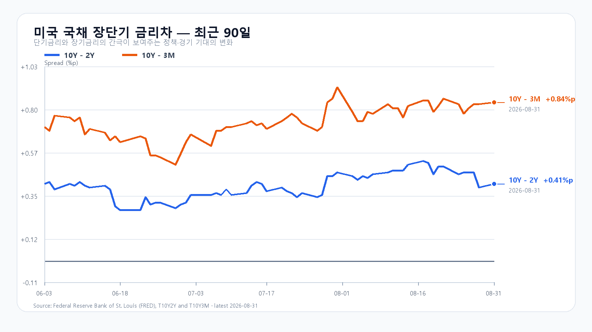

오늘의 한 문장
KOSPI 6,750은 미국 반도체와 원화가 받치고, 6,950 위는 외국인·프로그램 수급이 열어야 합니다.
전날 반등은 강했지만 수급은 따라오지 않았다
KOSPI는 8월 31일 6,613.58로 출발해 6,547.76까지 밀린 뒤 6,820.02로 마감했습니다. KODEX 레버리지는 98,015원에서 107,080원까지 반등했습니다. 유가 충격을 장중에 상당 부분 소화한 셈입니다.
그렇다고 수급까지 돌아선 것은 아닙니다. 15시 30분 외국인 현물은 -1조172억원, 프로그램 전체는 -3,630억원이었습니다. 15시 20분에도 외국인 -1조233억원, 프로그램 -6,916억원이어서 강세 트리거는 충족되지 않았습니다. 오늘은 반등의 크기보다 수급의 질을 봐야 합니다.
| 항목 | 확정값 | 오늘 기준 |
|---|---|---|
| KOSPI | 6,820.02 · 저가 6,547.76 | 6,750 방어 · 6,950 돌파 |
| KODEX 레버리지 | 107,080원 · 저가 98,015원 | 103,000원 방어 · 107,100원 반등 기준 |
| 외국인·프로그램 | -1조172억 · -3,630억원 | 동반 개선 여부 |
| 삼성전자·SK하이닉스 NXT | 259,500원(-0.19%) · 1,670,000원(-0.24%) | 08:18 KST 낙폭 회복 여부 |
유가와 금리는 상단을, 반도체와 원화는 하단을 만든다
월요일 브렌트유는 90.49달러로 2.71%, WTI는 85.76달러로 2.83% 올랐습니다. 미국 10년물 금리도 4.75%였습니다. 유가와 장기금리가 함께 높으면 수입 비용과 성장주의 할인율이 동시에 올라 KOSPI 상단이 무거워집니다.
미국 증시 전체는 약했지만 반도체는 달랐습니다. SOXX +0.48%, SMH +0.64%, Nvidia +1.49%, AMD +1.10%, Micron +2.77%, Broadcom +0.42%였습니다. 달러/원도 1,369원대로 내려왔습니다. 다만 삼성전자와 SK하이닉스 NXT는 장전 약세여서 미국 반도체 반등을 국내 시초가에 그대로 옮길 수는 없습니다.

DDR4 강세와 DDR5 숨 고르기를 나눠 본다
TrendForce의 8월 31일 공개치에서 DDR5 16Gb는 0.03% 내린 53.917달러였습니다. DDR4 16Gb는 0.53% 오른 91.780달러, DDR4 8Gb는 0.40% 오른 44.367달러였습니다. 레거시 DDR 강세는 실적 하단을 받치지만 모든 메모리 가격이 같은 방향으로 가는 국면은 아닙니다.
오늘의 시나리오
KOSPI 6,750~6,950
미국 반도체와 원화가 하단을 받치지만 유가 90달러와 10년물 4.75%가 상단을 막습니다. 6,820~6,900에서 매물을 소화합니다.
KOSPI 6,950~7,150
수출이 기대를 웃돌고 메모리 대형주가 장전 약세를 되돌립니다. 외국인·프로그램 동반 순매수가 필요합니다.
KOSPI 6,500~6,750
NXT 약세가 정규장으로 번지고 외국인·프로그램 매도가 커지며 전날 반등의 일부를 되돌립니다.
2차 지지 98,000원 · 1차 지지 103,000원 · 반등 기준 107,100원 · 저항 112,000원.
전체 장중 경로는 KOSPI 6,450~7,200으로 봅니다. 오늘 대응 점수는 공격 25 · 관망 55 · 방어 20입니다.
09:00 수출이 첫 번째 장중 분기점이다
한국 8월 수출입은 정규장 개장과 같은 시각인 오전 9시에 발표됩니다. 발표 전 예상치는 결과가 아닙니다. 실제 수출과 반도체 수출이 기대를 웃도는지, 환율과 외국인 수급이 같은 방향으로 반응하는지를 확인해야 합니다.
오후 11시에는 미국 ISM 제조업지수와 7월 JOLTS가 함께 나옵니다. 9월 4일 오후 9시 30분에는 미국 8월 고용보고서가 발표됩니다.